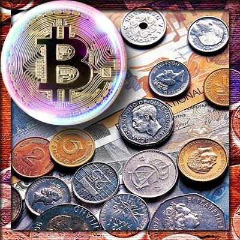
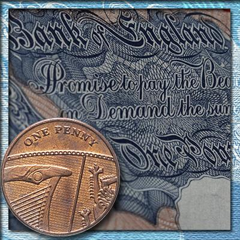
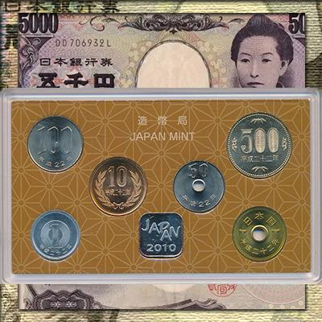

Стодолларовую банкноту Соединённых Штатов Америки, пожалуй, можно назвать лидером по популярности на нашей планете. С момента появления первых банкнот достоинством 100 долларов прошло чуть более полтора столетия, однако их история изобилует интересными фактами. Посмотрим когда впервые напечатали эти банкноты и как менялся их вид. Поймём, кто такой Бенджамин Франклин, и почему он достоин находиться на стодолларовой купюре. Узнаем, как печатают современные банкноты и как оперативно проверить их подлинность на примере ста долларов США.

Историки высчитали, что деньги на нашей планете появились примерно за 9000 лет до начала нашей эры. Но привычные нам монеты начали чеканить намного позже. А век банкнот и вовсе не так уж долог. Сейчас их активно вытесняют электронные платежи и всевозможные цифровые валюты. Пробежимся по многовековой истории денег от товарного обмена до криптовалют, попутно отметив важнейшие её вехи.

Фунт стерлингов - валюта, издавна уважаемая финансистами всего мира. Мы уже рассказывали о различных деньгах Англии и подробно знакомили с линейкой современных монет Соединённого Королевства. На этот раз разберём пластиковые и бумажные деньги, включая региональные выпуски. Познакомимся с "Британией" в качестве инвестиционной монеты. Разберём место британского фунта в ряду основных резервных валют нашей планеты.

Несмотря на всеобщую глобализацию, Япония остаётся одной из самых загадочных стран Дальнего Востока. Слишком многое в ней не похоже на привычный нам западный мир. Хотя многое полезное для себя эта страна позаимствовала от держав Запада. Одним из заимствований стала и национальная валюта Японии. Узнаем, как выглядели первые иены. Поймём, почему эта валюта так называется. Познакомимся поближе с банкнотами и монетами современной Японии.